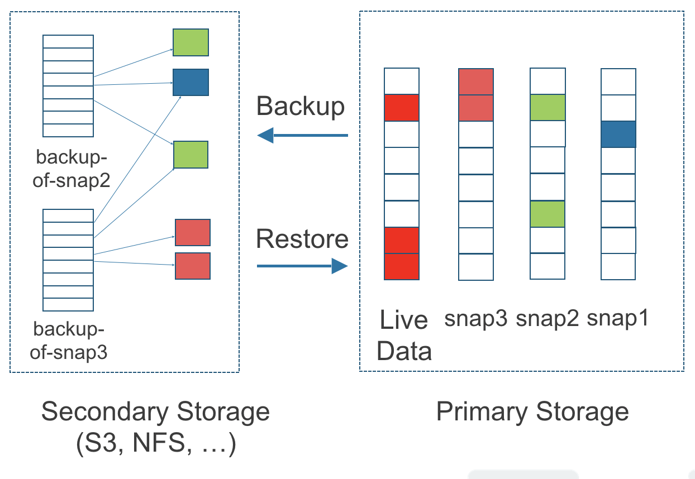

Arquitectura y Conceptos
SUSE Storage crea un controlador de almacenamiento dedicado para cada volumen y replica de forma síncrona el volumen en varias réplicas almacenadas en múltiples nodos.
El controlador de almacenamiento y las réplicas se orquestan mediante Kubernetes.
Para una visión general de las características, consulta esta sección.
Para los requisitos de instalación, dirígete a esta sección.
Esta sección asume familiaridad con los conceptos de almacenamiento persistente de Kubernetes. Para más información sobre estos conceptos, consulta el apéndice. Para ayuda con la terminología utilizada en esta página, consulta esta sección.
1. Diseño
El diseño tiene dos capas: el plano de datos y el plano de control. El Longhorn Engine es un controlador de almacenamiento que corresponde al plano de datos, y el Longhorn Manager corresponde al plano de control.
1.1. El Longhorn Manager y el Longhorn Engine
El Pod del Longhorn Manager se ejecuta en cada nodo del SUSE Storage clúster como un DaemonSet de Kubernetes. Crea y gestiona volúmenes en el clúster de Kubernetes y maneja las llamadas a la API desde la SUSE Storage interfaz de usuario o el plugin Longhorn CSI. Sigue el patrón de controlador de Kubernetes, que a veces se llama patrón de operador.
El Longhorn Manager se comunica con el servidor API de Kubernetes para crear un nuevo SUSE Storage volumen CR. Luego, el Longhorn Manager observa la respuesta del servidor API, y cuando ve que el servidor API de Kubernetes ha creado un nuevo SUSE Storage volumen CR, el Longhorn Manager crea un nuevo volumen.
Cuando se le pide al Longhorn Manager que cree un volumen, crea una instancia de Longhorn Engine en el nodo al que está adjunto el volumen, y crea una réplica en cada nodo donde se colocará una réplica. Las réplicas deben colocarse en hosts separados para garantizar la máxima disponibilidad.
Los múltiples caminos de datos para las réplicas aseguran la alta disponibilidad de un volumen Longhorn. Si ocurre un problema con una réplica o el Engine, no afectará a todas las réplicas ni al acceso del pod al volumen. El Pod seguirá funcionando con normalidad. Para un volumen dado con un recuento de réplicas de N, el volumen Longhorn puede tolerar un máximo de N-1 fallos de réplicas. Esto se debe a que se necesita al menos una réplica sana para que el volumen siga operativo.
El Longhorn Engine siempre se ejecuta en el mismo nodo que el Pod que utiliza el SUSE Storage volumen. Replica el volumen de forma sincrónica a través de las múltiples réplicas almacenadas en múltiples nodos.
El Longhorn Engine y las réplicas se orquestan utilizando Kubernetes.
En la figura de abajo,
-
Hay tres instancias con SUSE Storage volúmenes.
-
Cada volumen tiene un controlador dedicado, llamado Longhorn Engine. Para los volúmenes V1, el motor se ejecuta como un proceso de Linux, mientras que para los volúmenes V2, opera como un dispositivo de bloque SPDK de matriz redundante de discos independientes (bdev).
-
Cada SUSE Storage volumen tiene dos réplicas. En V1, las réplicas se ejecutan como procesos de Linux, mientras que en V2, se implementan como bdevs de volumen lógico SPDK.
-
Las flechas en la figura indican el flujo de datos de lectura/escritura entre el volumen, la instancia del controlador, las instancias de réplica y los discos.
-
Al crear un Longhorn Engine separado para cada volumen, si un controlador falla, la función de otros volúmenes no se ve afectada.
Figura 1. Flujo de Datos de Lectura/Escritura entre el Volumen, el Motor Longhorn, las Instancias de Réplica y los Discos

1.2. Ventajas de un Diseño Basado en Microservicios
Cada Longhorn Engine solo necesita servir un volumen, simplificando el diseño de los controladores de almacenamiento. Debido a que el dominio de fallo del software del controlador está aislado a volúmenes individuales, un fallo del controlador solo impactará a un volumen.
El Longhorn Engine es simple y ligero, lo que nos permite crear miles de motores separados. Kubernetes programa estos motores separados, extrayendo recursos de un conjunto compartido de discos y trabajando con SUSE Storage para formar un sistema de almacenamiento en bloques distribuido y resiliente.
Debido a que cada volumen tiene su propio controlador, el controlador y las instancias de réplica para cada volumen también pueden actualizarse sin causar una interrupción notable en las operaciones de IO.
SUSE Storage puede crear un trabajo de larga duración para orquestar la actualización de todos los volúmenes activos sin interrumpir la operación en curso del sistema. Para asegurar que una actualización no cause problemas imprevistos, SUSE Storage puede optar por actualizar un pequeño subconjunto de los volúmenes y volver a la versión anterior si algo sale mal durante la actualización.
1.3. Controlador CSI
El controlador CSI de Longhorn toma el dispositivo de bloque, lo formatea y lo monta en el nodo. Luego, el kubelet monta el dispositivo dentro de un Pod de Kubernetes. Esto permite que el Pod acceda al SUSE Storage volumen.
Las imágenes del controlador CSI de Kubernetes requeridas serán desplegadas automáticamente por el desplegador del controlador Longhorn. Para instalar SUSE Storage en un entorno aislado, consulta esta sección.
1.4. Plugin CSI
SUSE Storage se gestiona en Kubernetes a través de un Plugin CSI. Esto permite una fácil instalación del plugin.
El plugin CSI de Kubernetes llama a SUSE Storage para crear volúmenes que generen datos persistentes para una carga de trabajo de Kubernetes. El plugin CSI te da la capacidad de crear, eliminar, adjuntar, desacoplar, montar el volumen y tomar instantáneas del volumen. Toda otra funcionalidad proporcionada por SUSE Storage se implementa a través de la interfaz de usuario.
El clúster de Kubernetes utiliza internamente la interfaz CSI para comunicarse con el plugin CSI de Longhorn. Y el plugin CSI de Longhorn se comunica con el Longhorn Manager utilizando la API de Longhorn.
Para volúmenes v1, SUSE Storage utiliza iSCSI, lo que puede requerir la configuración adicional en tus nodos:
-
Dependiendo de la distribución de Linux, necesitas instalar ya sea
open-iscsioiscsiadm.
En contraste, los volúmenes v2 vienen con diferentes requisitos previos, dependiendo de la configuración:
-
Se requieren módulos del kernel como
vfio_pciyuio_pci_generic. -
Para el frontend NVMe-TCP, es necesario el módulo
nvme_tcp.
1.5. La interfaz de usuario
La interfaz de usuario interactúa con el Longhorn Manager a través de la API de Longhorn y actúa como un complemento de Kubernetes. A través de la interfaz de usuario, se pueden gestionar instantáneas, copias de seguridad, nodos y discos.
Además, el uso del espacio de los nodos trabajadores del clúster se recopila e ilustra mediante la interfaz de usuario. Vea aquí para más detalles.
2. Volúmenes y Almacenamiento Primario
Al crear un volumen, el Longhorn Manager crea el microservicio Longhorn Engine y las réplicas para cada volumen como microservicios. Juntos, estos microservicios forman un SUSE Storage volumen. Cada réplica debe colocarse en un nodo diferente o en discos diferentes.
Después de que el Longhorn Engine es creado por el Longhorn Manager, se conecta a las réplicas. El Longhorn Engine expone un dispositivo de bloque en el mismo nodo donde se está ejecutando el Pod.
Se puede crear un SUSE Storage volumen con kubectl.
2.1. Provisionamiento delgado y tamaño del volumen
SUSE Storage es un sistema de almacenamiento de aprovisionamiento delgado. Eso significa que un SUSE Storage volumen solo ocupará el espacio que necesita en ese momento. Por ejemplo, si has asignado un volumen de 20 GB pero solo usas 1 GB de él, el tamaño real de los datos en tu disco sería de 1 GB. Puedes ver el tamaño real de los datos en los detalles del volumen en la interfaz de usuario.
Un SUSE Storage volumen en sí mismo no puede reducir su tamaño si has eliminado contenido de tu volumen. Por ejemplo, si creas un volumen de 20 GB, utilizas 10 GB y luego eliminas el contenido de 9 GB, el tamaño real en el disco seguiría siendo 10 GB en lugar de 1 GB. Esto sucede porque SUSE Storage opera a nivel de bloque, no a nivel de sistema de archivos, por lo que SUSE Storage no sabe si el contenido ha sido eliminado por un usuario o no. Esa información se mantiene principalmente a nivel de sistema de archivos.
Para más introducciones sobre los conceptos relacionados con el tamaño del volumen, consulta este doc para más detalles.
2.2. Revirtiendo Volúmenes en Modo de Mantenimiento
Cuando un volumen se adjunta desde la interfaz de usuario, hay una casilla de verificación para el modo de mantenimiento. Se utiliza principalmente para revertir un volumen desde una instantánea.
La opción resultará en adjuntar el volumen sin habilitar el frontend (dispositivo de bloque o iSCSI), para asegurarse de que nadie pueda acceder a los datos del volumen cuando el volumen está adjunto.
Después de la versión v0.6.0, la operación de revertir un snapshot requería que el volumen estuviera en modo de mantenimiento. Esto se debe a que si el contenido del dispositivo de bloque se modifica mientras el volumen está montado o en uso, causará corrupción del sistema de archivos.
También es útil para inspeccionar el estado del volumen sin preocuparse de que los datos sean accedidos por accidente.
2.3. Réplicas
Cada réplica contiene una cadena de instantáneas de un SUSE Storage volumen. Una instantánea es como una capa de una imagen, con la instantánea más antigua utilizada como la capa base, y las instantáneas más nuevas encima. Los datos solo se incluyen en una nueva instantánea si sobrescriben datos en una instantánea más antigua. Juntas, una cadena de instantáneas muestra el estado actual de los datos.
Para cada SUSE Storage volumen, múltiples réplicas del volumen deberían ejecutarse en el clúster de Kubernetes, cada una en un nodo separado. Todas las réplicas se tratan por igual, y el Longhorn Engine siempre se ejecuta en el mismo nodo que el pod, que también es el consumidor del volumen. De esta manera, nos aseguramos de que incluso si el Pod está inactivo, el Longhorn Engine puede ser trasladado a otro Pod y su servicio continuará sin interrupciones.
El recuento de réplicas predeterminado se puede cambiar en la configuración. Cuando se adjunta un volumen, el recuento de réplicas para el volumen se puede cambiar en la interfaz de usuario.
Si el recuento de réplicas saludables actuales es menor que el recuento de réplicas especificado, SUSE Storage comenzará a reconstruir nuevas réplicas.
Si el recuento de réplicas saludables actuales es mayor que el recuento de réplicas especificado, el Balanceo Automático de Réplicas y la Localidad de Datos están desactivados, SUSE Storage no hará nada. En esta situación, si una réplica falla o se elimina, SUSE Storage no comenzará a reconstruir nuevas réplicas a menos que el recuento de réplicas saludables baje del recuento de réplicas especificado. Si el Balanceo Automático de Réplicas o la Localidad de Datos están configurados, SUSE Storage podría eliminar una de las réplicas.
Las réplicas de SUSE Storage se construyen utilizando Linux archivos dispersos, que soportan aprovisionamiento delgado.
2.3.1. Cómo funcionan las operaciones de lectura y escritura para las réplicas
Cuando se lee datos de una réplica de un volumen, si los datos se pueden encontrar en los datos en vivo, entonces se utilizan esos datos. Si no, se leerá la instantánea más reciente. Si los datos no se encuentran en la instantánea más reciente, se lee la siguiente instantánea más antigua, y así sucesivamente, hasta que se lea la instantánea más antigua.
Cuando tomas una instantánea, se crea un disco de diferencia. A medida que el número de instantáneas crece, la cadena de discos de diferencia (también llamada cadena de instantáneas) podría volverse bastante larga. Para mejorar el rendimiento de lectura, SUSE Storage por lo tanto mantiene un índice de lectura que registra qué disco de diferencia contiene datos válidos para cada bloque de almacenamiento de 4K.
En la figura siguiente, el volumen tiene ocho bloques. El índice de lectura tiene ocho entradas y se llena de manera perezosa a medida que se realizan operaciones de lectura.
Una operación de escritura restablece el índice de lectura, haciendo que apunte a los datos en vivo. Los datos en vivo consisten en datos en algunos índices y espacio vacío en otros índices.
Más allá del índice de lectura, actualmente no mantenemos metadatos adicionales para indicar qué bloques están en uso.
Figura 2. Cómo el índice de lectura realiza un seguimiento de qué instantánea contiene los datos más recientes

La figura anterior está codificada por colores para mostrar qué bloques contienen los datos más recientes según el índice de lectura, y la fuente de los últimos datos también se enumera en la tabla a continuación:
| Índice de lectura | Fuente de los últimos datos |
|---|---|
0 |
Instantánea más reciente |
1 |
Datos en vivo |
2 |
Instantánea más antigua |
3 |
Instantánea más antigua |
4 |
Instantánea más antigua |
5 |
Datos en vivo |
6 |
Datos en vivo |
7 |
Datos en vivo |
Tenga en cuenta que, como muestra la flecha verde en la figura anterior, el Índice 5 del índice de lectura apuntaba anteriormente a la segunda instantánea más antigua como la fuente de los datos más recientes, luego cambió para apuntar a los datos en vivo cuando el bloque de almacenamiento de 4K en el Índice 5 fue sobrescrito por los datos en vivo.
El índice de lectura se mantiene en memoria y consume un byte por cada bloque de 4K. El índice de lectura del tamaño de un byte significa que puedes tomar hasta 254 instantáneas para cada volumen.
El índice de lectura consume una cierta cantidad de estructura de datos en memoria por cada réplica. Un volumen de 1 TB, por ejemplo, consume 256 MB de índice de lectura en memoria.
2.3.2 Cómo se añaden nuevas réplicas
Cuando se añade una nueva réplica, las réplicas existentes se sincronizan con la nueva réplica. La primera réplica se crea tomando una nueva instantánea de los datos en vivo.
Los siguientes pasos muestran un desglose más detallado de cómo SUSE Storage añade nuevas réplicas:
-
El Longhorn Engine está en pausa.
-
Supongamos que la cadena de instantáneas dentro de la réplica consiste en los datos en vivo y una instantánea. Cuando se crea la nueva réplica, los datos en vivo se convierten en la instantánea más nueva (segunda) y se crea una nueva versión en blanco de los datos en vivo.
-
La nueva réplica se crea en modo WO (solo escritura).
-
El Longhorn Engine se reanuda.
-
Todas las instantáneas están sincronizadas.
-
La nueva réplica se configura en modo RW (lectura-escritura).
2.3.3. Cómo se reconstruyen las réplicas defectuosas.
SUSE Storage siempre intentará mantener al menos el número dado de réplicas sanas para cada volumen.
Cuando el controlador detecta fallos en una de sus réplicas, marca la réplica como estando en un estado de error. El Longhorn Manager es responsable de iniciar y coordinar el proceso de reconstrucción de la réplica defectuosa.
Para reconstruir la réplica defectuosa, el Longhorn Manager crea una réplica en blanco y llama al Longhorn Engine para añadir la réplica en blanco al conjunto de réplicas del volumen.
Para añadir la réplica en blanco, el Longhorn Engine realiza las siguientes operaciones:
-
Pausa todas las operaciones de lectura-escritura.
-
Añade la réplica en blanco en modo WO (solo escritura).
-
Toma una instantánea de todas las réplicas existentes, que ahora tendrán un disco de diferencia en blanco en su cabeza.
-
Despausa todas las operaciones de lectura-escritura. Solo las operaciones de escritura se enviarán a la réplica recién añadida.
-
Inicia un proceso en segundo plano para sincronizar todos menos el disco de diferencia más reciente desde una buena réplica a la réplica en blanco.
-
Después de que la sincronización se complete, todas las réplicas ahora tienen datos consistentes, y el gestor de volúmenes configura la nueva réplica en modo RW (lectura-escritura).
Finalmente, Longhorn Manager llama a Longhorn Engine para eliminar la réplica defectuosa de su conjunto de réplicas.
2.4. Instantáneas
La función de instantáneas permite que un volumen se revierta a un cierto punto en la historia. Las copias de seguridad en el almacenamiento secundario también pueden construirse a partir de una instantánea.
Cuando se restaura un volumen a partir de una instantánea, refleja el estado del volumen en el momento en que se creó la instantánea.
La función de instantánea también es parte del proceso de reconstrucción de SUSE Storage. Cada vez que SUSE Storage detecta que una réplica está caída, tomará automáticamente una instantánea (del sistema) y comenzará a reconstruirla en otro nodo.
2.4.1. Cómo funcionan las instantáneas
Una instantánea es como una capa de una imagen, con la instantánea más antigua utilizada como la capa base, y las instantáneas más nuevas encima. Los datos solo se incluyen en una nueva instantánea si sobrescriben datos en una instantánea más antigua. Juntas, una cadena de instantáneas muestra el estado actual de los datos. Para un desglose más detallado de cómo se leen los datos de una réplica, consulta la sección sobre operaciones de lectura y escritura para réplicas.
Las instantáneas no pueden cambiar una vez que se crean, a menos que se elimine una instantánea, en cuyo caso sus cambios se fusionan con la siguiente instantánea más reciente. Los nuevos datos siempre se escriben en la versión en vivo. Las nuevas instantáneas siempre se crean a partir de datos en vivo.
Para crear una nueva instantánea, los datos en vivo se convierten en la instantánea más reciente. Luego se crea una nueva versión en blanco de los datos en vivo, reemplazando a los antiguos datos en vivo.
2.4.2. Instantáneas recurrentes
Para reducir el espacio ocupado por las instantáneas, el usuario puede programar una instantánea o copia de seguridad recurrente con un número de instantáneas a retener, que automáticamente creará una nueva instantánea/copia de seguridad según lo programado, y luego limpiará cualquier instantánea/copia de seguridad excesiva.
2.4.3. Eliminación de instantáneas
Las instantáneas no deseadas se pueden eliminar manualmente a través de la interfaz de usuario. Cualquier instantánea generada por el sistema será marcada automáticamente para eliminación si se activa la eliminación de alguna instantánea.
La última instantánea no se puede eliminar. Esto se debe a que cada vez que se elimina una instantánea, SUSE Storage fusionará su contenido con la siguiente instantánea, de modo que la siguiente y las posteriores instantáneas retengan el contenido correcto.
Pero SUSE Storage no puede hacer eso con la última instantánea, ya que no hay ninguna instantánea más reciente con la que combinar la instantánea eliminada. La siguiente “snapshot” de la última instantánea es el volumen activo (cabeza del volumen), que está siendo leído/escrito por el usuario en este momento, por lo que el proceso de fusión no puede ocurrir.
En su lugar, la última instantánea será marcada como eliminada, y se limpiará la próxima vez que sea posible.
Para limpiar la última instantánea, se puede crear una nueva instantánea, y luego se puede eliminar la anterior "última" instantánea.
2.4.4. Almacenando Instantáneas
Las instantáneas se almacenan localmente, como parte de cada réplica de un volumen. Se almacenan en el disco de los nodos dentro del clúster de Kubernetes. Las instantáneas se almacenan en la misma ubicación que los datos del volumen en el disco físico del host.
2.4.5. Consistencia ante Fallos
SUSE Storage es una solución de almacenamiento en bloques consistente ante fallos.
Es normal que el sistema operativo mantenga contenido en la caché antes de escribir en la capa de bloques. Esto significa que si todas las réplicas están caídas, entonces SUSE Storage puede no contener los cambios que ocurrieron inmediatamente antes del apagado, porque el contenido se mantuvo en la caché a nivel de sistema operativo y aún no se transfirió al sistema SUSE Storage.
Este problema es similar a los problemas que podrían ocurrir si tu ordenador de sobremesa se apaga debido a un corte de energía. Después de reanudar la energía, puedes encontrar algunos archivos corruptos en el disco duro.
Para forzar que los datos se escriban en la capa de bloques en cualquier momento dado, se puede ejecutar manualmente el comando sync en el nodo, o se puede desmontar el disco. El sistema operativo escribiría el contenido de la caché en la capa de bloques en cualquiera de las situaciones.
SUSE Storage ejecuta automáticamente el comando sync antes de crear una instantánea.
3. Copias de Seguridad y Almacenamiento Secundario
Una copia de seguridad es un objeto en el almacén de copias de seguridad, que es un almacén de objetos compatible con NFS o S3 externo al clúster de Kubernetes. Las copias de seguridad proporcionan una forma de almacenamiento secundario para que, incluso si tu clúster de Kubernetes se vuelve inaccesible, tus datos aún puedan ser recuperados.
Debido a que la replicación del volumen está sincronizada, y debido a la latencia de la red, es difícil realizar replicación entre regiones. El almacén de copias de seguridad también se utiliza como un medio para abordar este problema.
Cuando el objetivo de copia de seguridad está configurado en la interfaz de usuario (Copias de Seguridad y Restauración → Objetivos de Copia de Seguridad), SUSE Storage puede conectarse al almacén de copias de seguridad y mostrar una lista de copias de seguridad existentes en la pantalla de Copias de Seguridad.
Si SUSE Storage se ejecuta en un segundo clúster de Kubernetes, también puede sincronizar volúmenes de recuperación ante desastres con las copias de seguridad en el almacenamiento secundario, para que tus datos puedan ser recuperados más rápidamente en el segundo clúster de Kubernetes.
3.1. Cómo funcionan las copias de seguridad
Una copia de seguridad se crea utilizando una instantánea como fuente, de modo que refleja el estado de los datos del volumen en el momento en que se creó la instantánea. Una copia de seguridad se almacena de forma remota fuera del clúster.
A diferencia de una instantánea, una copia de seguridad puede considerarse como una versión aplanada de una cadena de instantáneas. De manera similar a cómo se pierde información cuando una imagen en capas se convierte en una imagen plana, también se pierden datos cuando una cadena de instantáneas se convierte en una copia de seguridad. En ambas conversiones, cualquier dato sobrescrito se perdería.
Debido a que las copias de seguridad no contienen instantáneas, no contienen el historial de cambios en los datos del volumen. Después de que restaure un volumen desde una copia de seguridad, el volumen inicialmente contiene una instantánea. Esta instantánea es una versión combinada de todas las instantáneas en la cadena original, y refleja los datos en vivo del volumen en el momento en que se creó la copia de seguridad.
Mientras que las instantáneas pueden ser de cientos de gigabytes, las copias de seguridad están compuestas por archivos de 2 MB.
Cada nueva copia de seguridad del mismo volumen original es incremental, detectando y transmitiendo los bloques cambiados entre instantáneas. Esta es una tarea relativamente fácil porque cada instantánea es un archivo diferencial y solo almacena los cambios desde la última instantánea. Este diseño también significa que si no se han cambiado bloques y se toma una copia de seguridad, esa copia de seguridad en el almacén de copias de seguridad mostrará como 0 bytes. Sin embargo, si restaura desde esa copia de seguridad, aún contendrá todos los datos del volumen, ya que restauraría los bloques necesarios ya presentes en el almacén de copias de seguridad, que se requieren para una copia de seguridad.
Para evitar almacenar un número muy grande de bloques de almacenamiento pequeños, SUSE Storage realiza operaciones de copia de seguridad utilizando bloques de 2 MB. Eso significa que si se cambia cualquier bloque de 4K en un límite de 2MB, SUSE Storage respaldará todo el bloque de 2MB. Esto ofrece el equilibrio adecuado entre manejabilidad y eficiencia.
Figura 3. La relación entre las copias de seguridad en el almacenamiento secundario y las instantáneas en el almacenamiento primario

La figura anterior describe cómo se crean las copias de seguridad a partir de instantáneas:
-
El lado de Almacenamiento Primario del diagrama muestra una réplica de un volumen SUSE Storage en el clúster de Kubernetes. La réplica consiste en una cadena de cuatro instantáneas. En orden de más reciente a más antiguo, las instantáneas son Datos en Vivo, snap3, snap2 y snap1.
-
El lado de Almacenamiento Secundario del diagrama muestra dos copias de seguridad en un servicio de almacenamiento de objetos externo como S3.
-
En Almacenamiento Secundario, la codificación por colores para backup-from-snap2 muestra que incluye tanto el cambio azul de snap1 como los cambios verdes de snap2. Ningún cambio de snap2 sobrescribió los datos en snap1, por lo tanto, los cambios de snap1 y snap2 están incluidos en backup-from-snap2.
-
La copia de seguridad llamada backup-from-snap3 refleja el estado de los datos del volumen en el momento en que se creó snap3. La codificación por colores y las flechas indican que backup-from-snap3 contiene todos los cambios en rojo oscuro de snap3, pero solo uno de los cambios verdes de snap2. Esto se debe a que uno de los cambios rojos en la instantánea 3 sobrescribió uno de los cambios verdes en la instantánea 2. Esto ilustra cómo las copias de seguridad no incluyen el historial completo de cambios, porque combinan las instantáneas con las que las precedieron.
-
Cada copia de seguridad mantiene su propio conjunto de bloques de 2 MB. Cada bloque de 2 MB se respalda solo una vez. Las dos copias de seguridad comparten un bloque verde y un bloque azul.
Cuando se elimina una copia de seguridad del almacenamiento secundario, SUSE Storage no elimina todos los bloques que utiliza. En su lugar, realiza una recolección de basura periódicamente para limpiar los bloques no utilizados del almacenamiento secundario.
Los bloques de 2 MB para todas las copias de seguridad que pertenecen al mismo volumen se almacenan bajo un directorio común y, por lo tanto, pueden ser compartidos entre múltiples copias de seguridad.
Para ahorrar espacio, los bloques de 2 MB que no cambiaron entre copias de seguridad pueden ser reutilizados para múltiples copias de seguridad que comparten el mismo volumen de copia de seguridad en el almacenamiento secundario. Debido a que se utilizan sumas de comprobación para dirigir los bloques de 2 MB, logramos cierto grado de deduplicación para los bloques de 2 MB en el mismo volumen.
Los metadatos a nivel de volumen se almacenan en volume.cfg. Los archivos de metadatos para cada copia de seguridad (por ejemplo, snap2.cfg) son relativamente pequeños porque solo contienen los offsets y sumas de comprobación de todos los bloques de 2 MB en la copia de seguridad.
Cada bloque de 2 MB (archivo .blk) está comprimido.
3.2. Copias de seguridad recurrentes
Las operaciones de copia de seguridad se pueden programar utilizando la función de instantánea y copia de seguridad recurrente, pero también se pueden realizar según sea necesario.
Se recomienda programar copias de seguridad recurrentes para tus volúmenes. Si no hay disponible un almacén de copias de seguridad, se recomienda programar en su lugar la instantánea recurrente.
La creación de copias de seguridad implica copiar los datos a través de la red, por lo que tomará tiempo.
3.3. Volúmenes de recuperación ante desastres
Un volumen de recuperación ante desastres (DR) es un volumen especial que almacena datos en un clúster de copia de seguridad en caso de que todo el clúster principal se caiga. Los volúmenes DR se utilizan para aumentar la resiliencia de los volúmenes SUSE Storage.
Debido a que el propósito principal de un volumen DR es restaurar datos de la copia de seguridad, este tipo de volumen no admite las siguientes acciones antes de ser activado:
-
Crear, eliminar y revertir instantáneas
-
Crear copias de seguridad
-
Crear volúmenes persistentes
-
Crear solicitudes de volúmenes persistentes
Un volumen DR se puede crear a partir de la copia de seguridad de un volumen en el backupstore. Después de que se crea el volumen DR, SUSE Storage monitorizará su volumen de copia de seguridad original y restaurará de forma incremental desde la última copia de seguridad. Un volumen de copia de seguridad es un objeto en el backupstore que contiene múltiples copias de seguridad del mismo volumen.
Si el volumen original en el clúster principal se cae, el volumen DR se puede activar inmediatamente en el clúster de copia de seguridad, reduciendo el tiempo necesario para restaurar los datos desde el backupstore al volumen en el clúster de copia de seguridad.
Cuando se activa un volumen DR, SUSE Storage comprobará la última copia de seguridad del volumen original. Si esa copia de seguridad no ha sido restaurada ya, se iniciará la restauración y la acción de activar fallará. Los usuarios deben esperar a que la restauración se complete antes de volver a intentar.
El objetivo de copia de seguridad en la configuración no puede ser actualizado si existen volúmenes de DR.
Después de que un volumen de DR sea activado, se convierte en un volumen normal SUSE Storage y no puede ser desactivado.
3.4. Intervalos de actualización de Backupstore, RTO y RPO
La restauración incremental suele ser desencadenada por la actualización periódica del backupstore. Puedes establecer el intervalo de actualización en la pantalla de configuración del objetivo de copia de seguridad (Backup y Restauración → Objetivos de Copia de Seguridad).
Ten en cuenta que este intervalo puede impactar potencialmente en el Objetivo de Tiempo de Recuperación (RTO). Si es demasiado largo, puede haber una gran cantidad de datos para que el volumen DR restaure, lo que tomará mucho tiempo.
En cuanto al Objetivo de Punto de Recuperación (RPO), se determina por la programación de copias de seguridad recurrentes del volumen de copia de seguridad. Si la programación de copias de seguridad recurrentes para el volumen normal A crea una copia de seguridad cada hora, entonces el RPO es de una hora. Puedes consultar aquí para ver cómo establecer copias de seguridad recurrentes en SUSE Storage.
El siguiente análisis asume que el volumen crea una copia de seguridad cada hora y que restaurar datos de una copia de seguridad de forma incremental toma cinco minutos:
-
Si el intervalo de sondeo del backupstore es de 30 minutos, entonces habrá como máximo una copia de seguridad de datos desde la última restauración. El tiempo para restaurar una copia de seguridad es de cinco minutos, por lo que el RTO sería de cinco minutos.
-
Si el intervalo de sondeo del backupstore es de 12 horas, entonces habrá como máximo 12 copias de seguridad de datos desde la última restauración. El tiempo para restaurar las copias de seguridad es 5 * 12 = 60 minutos, por lo que el RTO sería de 60 minutos.
Apéndice: Cómo funciona el almacenamiento persistente en Kubernetes
Para entender el almacenamiento persistente en Kubernetes, es importante entender Volúmenes, PersistentVolumes, PersistentVolumeClaims y StorageClasses, y cómo funcionan juntos.
Una propiedad importante de un Volumen de Kubernetes es que tiene el mismo ciclo de vida que el Pod al que pertenece. El Volumen se pierde si el Pod desaparece. En contraste, un PersistentVolume continúa existiendo en el sistema hasta que los usuarios lo eliminan. Los Volúmenes también se pueden utilizar para compartir datos entre contenedores dentro del mismo Pod, pero este no es el caso de uso principal porque los usuarios normalmente solo tienen un contenedor por Pod.
Un PersistentVolume (PV) es una pieza de almacenamiento persistente en el clúster de Kubernetes, mientras que un PersistentVolumeClaim (PVC) es una solicitud de almacenamiento. StorageClasses permiten que se aprovisione dinámicamente nuevo almacenamiento para cargas de trabajo bajo demanda.
Cómo las cargas de trabajo de Kubernetes utilizan almacenamiento persistente nuevo y existente
En términos generales, hay dos formas principales de utilizar almacenamiento persistente en Kubernetes:
-
Utilizar un volumen persistente existente
-
Aprovisionar dinámicamente nuevos volúmenes persistentes
Aprovisionamiento de Almacenamiento Existente
Para utilizar un PV existente, tu aplicación necesitará usar un PVC que esté vinculado a un PV, y el PV debe incluir los recursos mínimos que el PVC requiere.
En otras palabras, un flujo de trabajo típico para configurar almacenamiento existente en Kubernetes es el siguiente:
-
Configura volúmenes de almacenamiento persistente, en el sentido de almacenamiento físico o virtual al que tienes acceso.
-
Añade un PV que se refiera al almacenamiento persistente.
-
Añade un PVC que se refiera al PV.
-
Monta el PVC como un volumen en tu carga de trabajo.
Cuando un PVC solicita una pieza de almacenamiento, el servidor API de Kubernetes intentará emparejar ese PVC con un PV preasignado a medida que los volúmenes coincidentes estén disponibles. Si se puede encontrar una coincidencia, el PVC se vinculará al PV, y el usuario comenzará a utilizar esa pieza de almacenamiento preasignada.
Si no existe un volumen coincidente, los PersistentVolumeClaims permanecerán sin vincular indefinidamente. Por ejemplo, un clúster aprovisionado con muchos PV de 50 Gi no coincidiría con un PVC que solicita 100 Gi. El PVC podría ser vinculado después de que se añada un PV de 100 Gi al clúster.
En otras palabras, puedes crear PVCs ilimitados, pero solo se vincularán a PVs si el maestro de Kubernetes puede encontrar un PV suficiente que tenga al menos la cantidad de espacio en disco requerida por el PVC.
Provisionamiento Dinámico de Almacenamiento
Para el provisionamiento dinámico de almacenamiento, tu aplicación necesitará usar un PVC que esté vinculado a una StorageClass. La StorageClass contiene la autorización para provisionar nuevos volúmenes persistentes.
El flujo de trabajo general para provisionar dinámicamente nuevo almacenamiento en Kubernetes implica un recurso StorageClass:
-
Añade una StorageClass y configúrala para que provisione automáticamente nuevo almacenamiento del almacenamiento al que tienes acceso.
-
Añade un PVC que haga referencia a la StorageClass.
-
Monta el PVC como un volumen para tu carga de trabajo.
Los administradores de clústeres de Kubernetes pueden usar una StorageClass de Kubernetes para describir el “classes” de almacenamiento que ofrecen. Las StorageClasses pueden tener diferentes límites de capacidad, diferentes IOPS, o cualquier otro parámetro que el provisionador soporte. El provisionador específico del proveedor de almacenamiento se utiliza junto con la StorageClass para asignar PV automáticamente, siguiendo los parámetros establecidos en el objeto StorageClass. Además, el provisionador ahora tiene la capacidad de hacer cumplir las cuotas de recursos y los requisitos de permisos para los usuarios. En este diseño, los administradores están liberados del trabajo innecesario de predecir la necesidad de PVs y asignarlos.
Cuando se utiliza una StorageClass, un administrador de Kubernetes no es responsable de asignar cada pieza de almacenamiento. El administrador solo necesita dar a los usuarios permiso para acceder a un cierto grupo de almacenamiento y decidir la cuota para el usuario. Entonces, el usuario puede extraer las piezas necesarias del almacenamiento del grupo de almacenamiento.
Las StorageClasses también se pueden usar sin crear explícitamente un objeto StorageClass en Kubernetes. Dado que la StorageClass también es un campo utilizado para emparejar un PVC con un PV, se puede crear un PV manualmente con un nombre de clase de almacenamiento personalizado, luego se puede crear un PVC que solicite un PV con ese nombre de StorageClass. Kubernetes puede entonces vincular tu PVC al PV con el nombre de StorageClass especificado, incluso si el objeto StorageClass no existe como un recurso de Kubernetes.
SUSE Storage introduce una StorageClass para que tus cargas de trabajo de Kubernetes puedan reservar partes de tu almacenamiento persistente según sea necesario.
Escalado Horizontal para Cargas de Trabajo de Kubernetes con Almacenamiento Persistente
El VolumeClaimTemplate es una propiedad de especificación de StatefulSet, y proporciona una forma para que la solución de almacenamiento en bloques escale horizontalmente para una carga de trabajo de Kubernetes.
Esta propiedad se puede utilizar para crear PVs y PVCs coincidentes para Pods que fueron creados por un StatefulSet.
Esos PVCs se crean utilizando una StorageClass, por lo que se pueden configurar automáticamente cuando el StatefulSet se escala hacia arriba.
Cuando un StatefulSet se escala hacia abajo, los PVs/PVCs adicionales se mantienen en el clúster y se reutilizan cuando el StatefulSet se escala hacia arriba nuevamente.
El VolumeClaimTemplate es importante para soluciones de almacenamiento en bloque como EBS y SUSE Storage. Debido a que esas soluciones son inherentemente ReadWriteOnce,, no se pueden compartir entre los Pods.
Los Deployments no funcionan bien con almacenamiento persistente si tienes más de un Pod en ejecución con datos persistentes. Para más de un pod, se debe utilizar un StatefulSet.